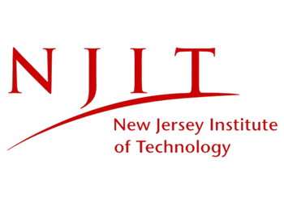

June 2025 – Present
IT Disaster Recovery & Business Continuity Governance Intern –
Public Services Electric & Gas (PSEG)
-
Support the business continuity and disaster recovery initiatives
by assisting with plan documentation and testing.
-
Collaborate with cross-functional teams, stakeholders, project,
and support teams across IT.
-
Manage and plan tabletop exercises, including playbooks and
facilitation.
Microsoft Suite
Power BI
Power Automate
Power Apps
SharePoint
ServiceNow Sandbox

September 2024 – Present
Undergraduate Research Assistant – NJIT AI4SG Lab
-
Researching prompt alignment and harmful code generation in LLMs
(e.g. CodeQwen).
-
Running classifier training and evaluations on MBPP and
harmful/benign prompt benchmarks.
-
Exploring jailbreak signatures and decoding-level prompt filtering
methods.
Python
LLMs
Transformers
Hugging Face
MBPP

September 2024 – December 2024
Application Developer Intern – IndiaAsha.org
-
Engineered a calendaring tool translating Vedic dates to Gregorian
calendar using astronomical algorithms.
-
Collaborated on modernizing legacy systems for better
accessibility and functionality.
Java
Algorithms
Data Structures
UI/UX

2022 – Present
Instructor & Curriculum Developer –
CodeNinjas, JerseySTEM, RoboThink
-
Developed coding and robotics curricula for students grades 5–10.
-
Led a successful Girls in STEM program with high return
participation.
-
Fostered inclusive classrooms where students felt supported and
confident learning tech.
Python
Scratch
STEM Education
Robotics
JavaScript